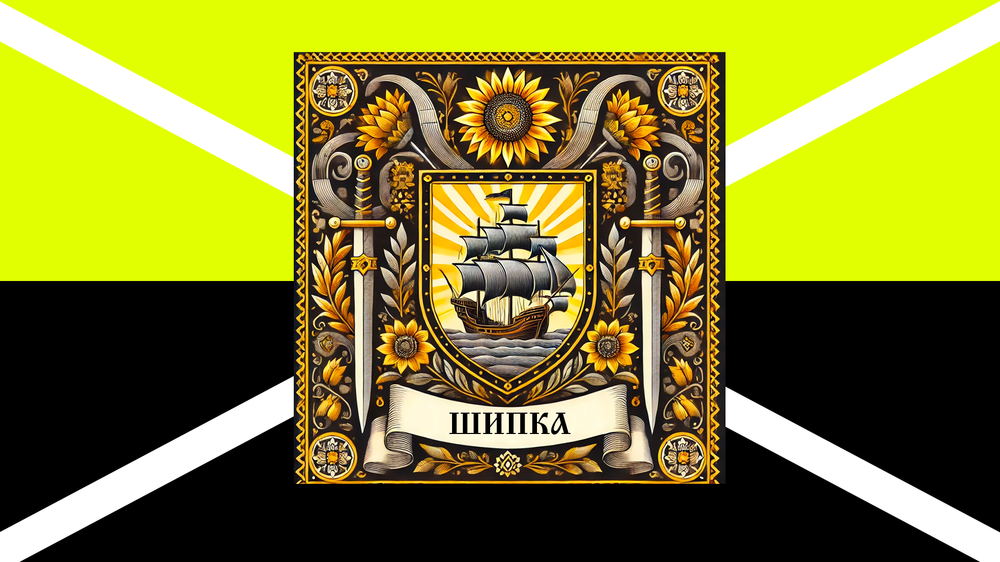

Росева Осінь (також "Росева-лиховидна війна") — дії в (2022) 2024 — 2025 роках Новояворівськ
Передумови: незаконна окупація: Родина Лиховидів, вчинила свідому і цілеспрямовану агресію проти теперішнього Рося. Вони незаконно захопили частину його квартири, намагаючись витіснити його з дому, що належав йому по праву.
Це була не просто сварка – це була справжня окупація, де Лиховиди встановлювали свої правила й повністю ігнорували права Рося.Карпати: народження роду Рось: 16 серпня 2024 року теперішній Рось вирушив у Карпати, щоб знайти новий шлях. Серед гір і чистого повітря він прийняв доленосне рішення: стати продовжувачем роду Рось. Ця клятва стала символом його рішучості боротися за справедливість і свої права.
17 жовтня 2024 року: офіційний новий початок Через два місяці, 17 жовтня, він офіційно став частиною роду Рось. Цей день став відправною точкою його боротьби – тепер він мав не лише моральне, а й офіційне право виступати за справедливість.
Окупація частини квартири Коли Рось повернувся з Карпат, Лиховиди продовжували незаконно займати частину квартири. Їхня поведінка нагадувала дії загарбників, які прагнули встановити повний контроль і змусити Рося провести спецоперацію.
План визволення: повернення своєї території Рось почав боротьбу за звільнення незаконно окупованої території, але цього разу він був не сам. На його боці стали вірні союзники: Союзники роду Рось Родини Шипка й Геть приєдналися до Рося, підтримуючи його в боротьбі. Ці рідні та друзі стали символом сили єдності, надаючи моральну та практичну допомогу. Державна підтримка До боротьби також приєдналися поліція, Територіальний центр комплектування (ТЦК), а також Розвідка України. Їхня участь була вирішальною: вони допомогли Росю легітимно відновити справедливість і змусили окупантів відповідати за свої дії.
Координація та протидія Разом із союзниками Рось розробив детальний план, спрямований на звільнення захопленої частини квартири. Він наполегливо працював із командою, крок за кроком наближаючи перемогу.
| Росевa-лиховидна війна | |
|---|---|
| Дата: | 2024 — 2025 рік |
| Місце: | Україна - Новояворівськ |
| Результат: | Бої продовжуються |
| Противники | |
 Рось Рось
 Лиховид Лиховид
|
|
| Командуючі | |
|
Євгеній РосьВалентин ЛиховидВалентина ЛиховидТетяна ЛиховидЛеонід Лиховид |
|
| Сили сторін | |
|
Рось Україна ТЦК Поліція РФ  ГУ ГШ ГУ ГШ СЗРУ СЗРУ Геть ГетьШипка Брянська область ЛиховидУкраїна  Легион "Свобода России" Легион "Свобода России" |
|
| Втрати | |
|
6.000грн
Загалом 40.000-70.000грн
|
|
Медиафайлы на Википедия